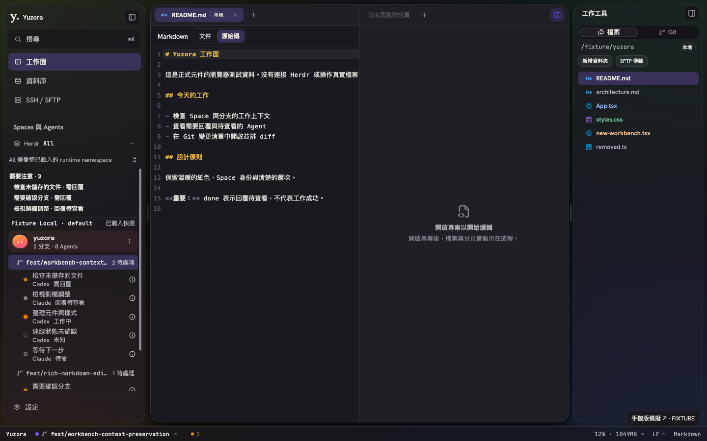
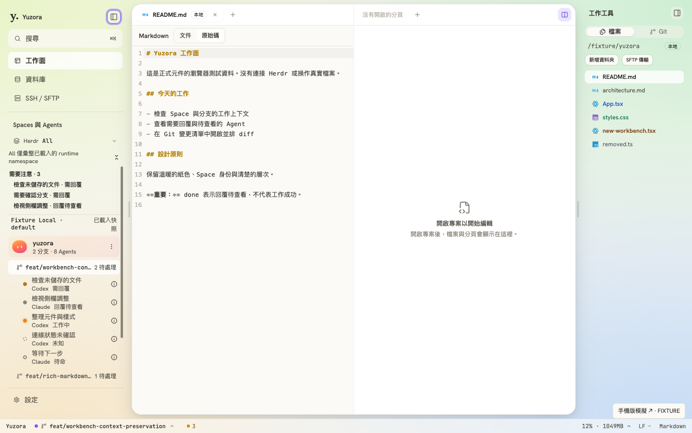

2026-09-09 · 側邊欄展開／收合 · 已取得瀏覽器驗證授權
消除側欄切換時的大量無關重渲染
左右側邊欄切換原本會連帶重渲染 Editor、Space 樹、工作工具、狀態列與設定等子樹，佔用動畫開始前的主執行緒。此次將無 props 的表面保留為穩定 JSX，對有 props 的工具、設定與命令面板使用 memo 與穩定 callback；元件自己的 store／context 訂閱仍正常更新。
兩側側欄、調寬把手、展開鈕與分頁列留白共用 260ms 與 cubic-bezier(0.2,0.8,0.2,1)，讓起步較柔和、收尾一致。拖曳調寬維持同步；減少動態效果設定仍會停用過渡。
可重現的前後量測
Chromium、1440 × 900、4 倍 CPU throttling、Vite 開發模式；使用正式 React 元件與固定模擬 IPC 資料。保留修改前 AppShell 與 CSS，在相同 fixture 分別執行左右各四次切換。首幀指點擊後第一個 requestAnimationFrame 回呼，並非獨立的螢幕顯示延遲量測。
| 指標 | 修改前 | 修改後 |
|---|
| 點擊至首幀回呼 | 142–175ms | 24–50ms |
| 每次取樣期間 JavaScript 執行 | 126–163ms | 16–31ms |
| 平均 JavaScript 執行 | 145.5ms | 21.1ms（減少約 85%） |
| 深色分割編輯區補充驗證 | — | 平均 JavaScript 24.8ms，8 次切換皆通過門檻 |
量測門檻：JavaScript 與首幀回呼各小於 65ms，連續幀最大間隔小於 50ms。這是本 fixture 的回歸判定，不代表所有裝置的固定效能保證。尺寸動畫仍會觸發正常排版與 resize 通知；此次修正的是量測確認的大量無關 React 重渲染。
完整前後量測 JSON · 修改前 · 修改後 · 深色分割編輯區
驗證結果
- 回歸測試先紅後綠：修改前，8 次切換與 2 次調寬會使無關面板重渲染 10 次；修改後為 0 次，設定仍能正常開啟。
bun run test：186 個測試檔、2,240 項測試通過。bun run build：兩份 TypeScript config 與 Vite 正式建置通過。bun run lint：0 errors、51 warnings。AppShell 的 set-state-in-effect 警告來自既有 mode effect。- 瀏覽器：左右各連續反向切換 8 次、保留 Editor／sidebar 節點與焦點、收合後 inert／aria-hidden 與 visibility、拖曳調寬時 0s 過渡、reduced motion、1280／1024／800px 下的按鈕可達性與窄視窗互斥，12 項檢查通過。
- 透過真實 Settings UI 切換淺色／深色與兩側背景開關，確認 memo 後的 callback 仍有效；背景關閉時再跑相同 12 項瀏覽器檢查全部通過。
git diff --check 通過；保留開始前與其他工作中的修改，未 stage／commit／push。
瀏覽器驗收 · 背景關閉驗收。可重跑腳本與 build／lint／test logs 位於 output/playwright/sidebar-smooth/。
實際畫面

深色模式，雙側欄與分割編輯區。右側編輯群組為空白，左側為 CodeMirror 原始碼。

透過 Settings 關閉兩側背景後，重跑展開／收合與調寬驗證。
範圍與限制
本次程式變更僅為 src/app/AppShell.tsx、src/app/AppShell.layout.test.tsx、src/app/workbench/workbench-shell.css 的渲染與動畫調整。沿用既有 shadcn 元件與應用程式外殼，沒有新增 UI primitive 或套件。
這些結果來自 Chromium fixture；沒有宣稱已驗證 Tauri 原生 WebKit／WebView2、原生子 webview 或有輸出負載的 HERDR 終端機。未改動終端機／Browser 的尺寸同步協定。正式建置成功不等同已重新安裝桌面程式。